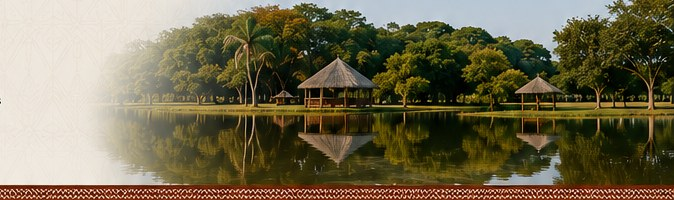
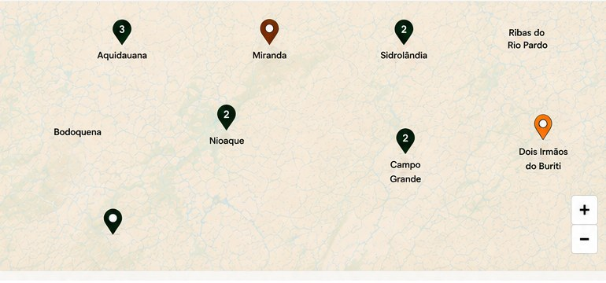

Território e comunidade
Nossas Aldeias
O povo Terena vive em diferentes aldeias localizadas em Mato Grosso do Sul. Conheça onde estamos.

Filtre no mapa
Explore as localidades e encontre informações sobre as aldeias.
+ de 30 aldeias espalhadas pelo estado de Mato Grosso do Sul.
Destaques das Aldeias

Aldeia Bananal
Tradição cultural, atividades comunitárias e valorização das tradições ancestrais.
Ver detalhes →
Aldeia Buriti
Conhecida pela produção de artesanato e preservação da língua e costumes Terena.
Ver detalhes →